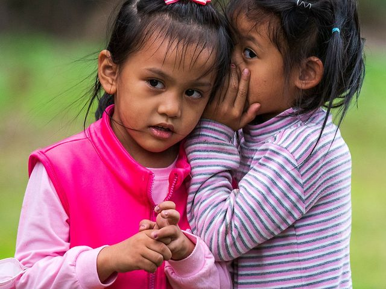
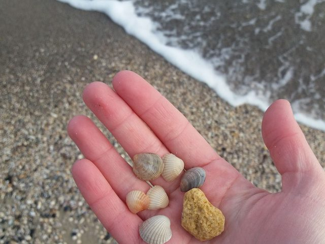
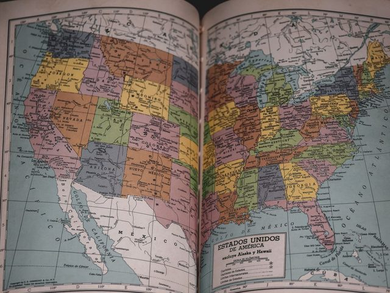
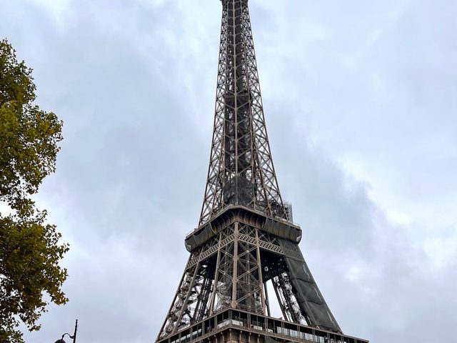
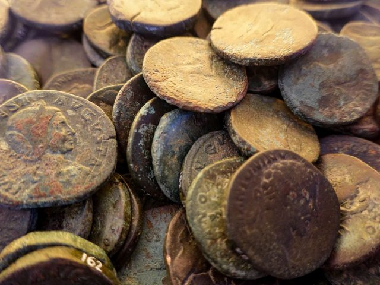
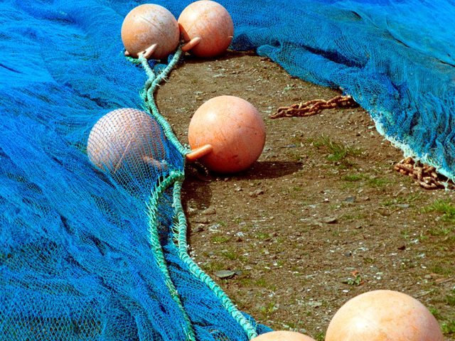

VOCABULARY · 主題 2000 字 PART 2 UNIT 34
Other nouns (4)．其他名詞（4）
其他名詞最後一部分，secret 到 principle，共 40 個。注意 thief → thieves、speech → speeches，以及 tear 當「眼淚」和「撕」讀音不同。
共 40 個單字．點 🔊 聽發音

1secretn.
祕密
keep a secret 保守祕密
Can you keep a secret?你能保守祕密嗎？

2sectionn.
部分；區域；（報紙）版
sports section 體育版
Dad always reads the sports section first.爸爸總是先看體育版。
3sensen.
感覺；判斷力；道理
make sense 有道理；sense of humor 幽默感
Your idea makes sense.你的想法有道理。

4shoren.
岸；海岸；湖岸
We walked along the shore and collected shells.我們沿著海岸走、撿貝殼。
5silencen.
安靜；沉默
不可數；silent 安靜的
There was silence in the classroom during the test.考試時教室裡一片安靜。

6skilln.
技能；技巧
skillful 熟練的
Cooking is a useful life skill.烹飪是一項實用的生活技能。

7societyn.
社會
複數 societies；social 社會的
Everyone is an important part of society.每個人都是社會的重要一份子。
8souln.
靈魂；人
Don't tell a soul. 別告訴任何人
Music is food for the soul.音樂是心靈的食糧。

9speechn.
演講；說話
複數 speeches；give a speech 演講
I have to give a speech in front of the class.我要在全班面前演講。

10speedn.
速度
at high speed 高速地
The train runs at a speed of 300 km per hour.這列火車以每小時三百公里的速度行駛。

11spiritn.
精神；靈魂
team spirit 團隊精神
Our team has great team spirit.我們隊很有團隊精神。

12staten. / v.
狀態；州；陳述
the United States 美國
Texas is a big state in the U.S.德州是美國一個大州。
13steamn.
蒸氣
不可數
Steam is coming out of the hot soup.熱湯冒出蒸氣。

14stepn. / v.
腳步；步驟；踏
step by step 一步一步地
The baby took her first steps today.寶寶今天踏出了第一步。

15stonen.
石頭
The bridge is made of stone.這座橋是石頭做的。
16stylen.
風格；款式
in style 流行
I like your new hair style.我喜歡你的新髮型。
17successn.
成功
不可數；succeed 成功（動詞）
Hard work is the key to success.努力是成功的關鍵。
18symboln.
象徵；符號
The dove is a symbol of peace.鴿子是和平的象徵。

19systemn.
系統；制度
MRT system 捷運系統
Taipei has a great MRT system.台北有很棒的捷運系統。
20Taiwanesen. / adj.
台灣人；台語；台灣的
單複數同形
Bubble tea is a famous Taiwanese drink.珍珠奶茶是有名的台灣飲料。

21talentn.
天分；才能
have a talent for… 有…的天分
She has a talent for music.她很有音樂天分。
22tearn. / v.
眼淚；撕
眼淚讀 [tɪr]，撕讀 [tɛr]
Tears ran down her face when she heard the news.她聽到消息時淚流滿面。
23termn.
學期；期限；術語
The spring term starts in February.春季學期二月開始。
24thiefn.
小偷；賊
複數 thieves
The thief ran away with my bag.小偷搶了我的包包跑走了。
25thoughtn.
想法；思考
think 的過去式也是 thought
That's a good thought!那是個好主意！
26titlen.
標題；書名；頭銜
What's the title of the book?這本書的書名是什麼？

27towern.
塔
the Eiffel Tower 艾菲爾鐵塔
The Eiffel Tower is in Paris.艾菲爾鐵塔在巴黎。
28traden. / v.
貿易；交換
Taiwan does a lot of trade with Japan.台灣和日本有很多貿易往來。

29traditionn.
傳統
traditional 傳統的
Eating moon cakes is a Moon Festival tradition.吃月餅是中秋節的傳統。

30treasuren. / v.
寶藏；珍惜
treasure map 藏寶圖
The pirates buried their treasure on an island.海盜把寶藏埋在一座島上。
31truthn.
真相；事實
tell the truth 說實話
Please tell me the truth.請告訴我實話。

32tunneln.
隧道
The train went into a long tunnel.火車開進一條長長的隧道。
33universen.
宇宙
There are billions of stars in the universe.宇宙中有數十億顆星星。

34valuen. / v.
價值；重視
valuable 有價值的
This old coin has great value.這枚舊硬幣很有價值。

35victoryn.
勝利
複數 victories
The team celebrated their victory.那支隊伍慶祝他們的勝利。
36warn.
戰爭
↔ peace
Many people lost their homes in the war.很多人在戰爭中失去家園。

37weddingn.
婚禮
wedding dress 婚紗
My aunt's wedding is next Saturday.我阿姨的婚禮在下週六。
38woodn.
木頭；木材
不可數；woods 樹林
The table is made of wood.這張桌子是木頭做的。

39netn.
網子；網路
the Net = the Internet
The fisherman caught many fish in his net.漁夫用網子抓到很多魚。
40principlen.
原則；原理
和 principal（校長）發音一樣
It's against my principles to lie.說謊違反我的原則。
FOCUS
容易搞混
| 字 | 意思 |
|---|---|
| principle | 原則 |
| principal | 校長 |
| wood | 木頭（不可數） |
| woods | 樹林 |
| scene／scenery | 場景／風景 |
thief → thieves（f 變 v 加 -es）；speech → speeches（加 -es）。